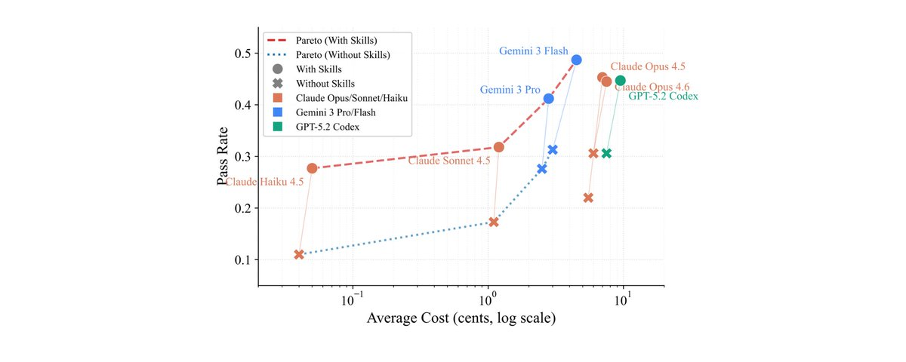
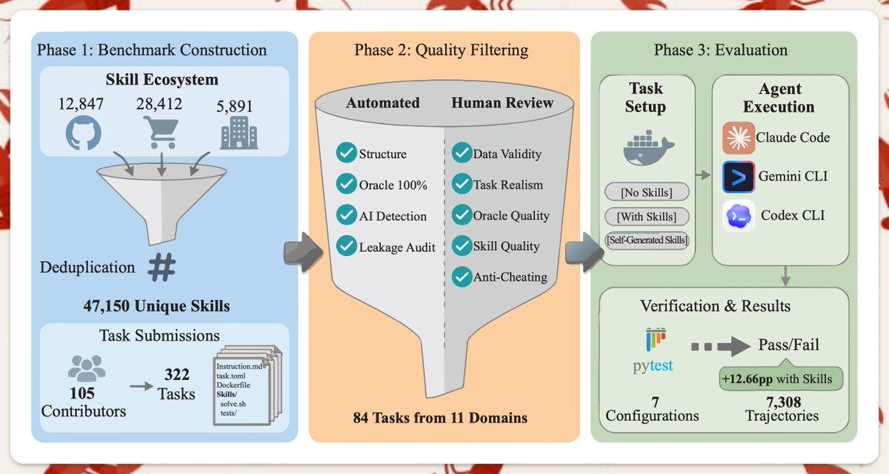
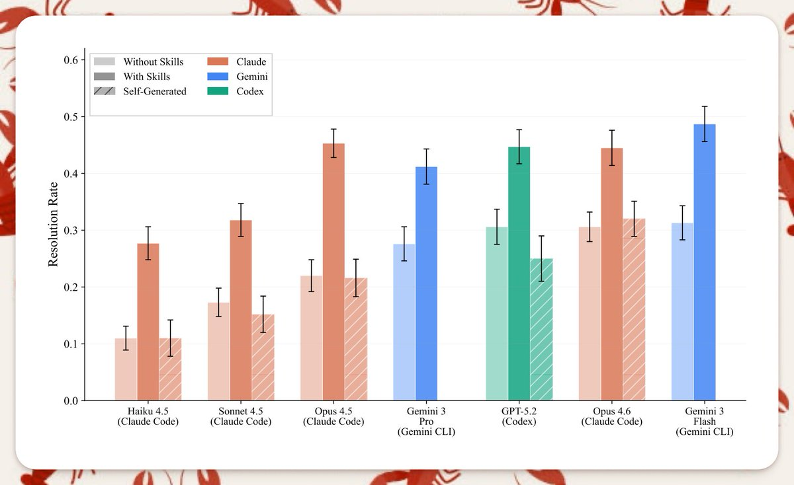
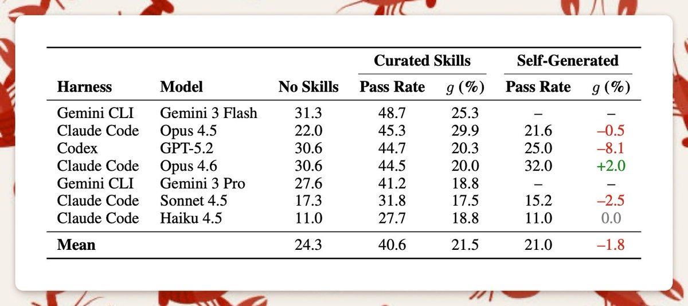
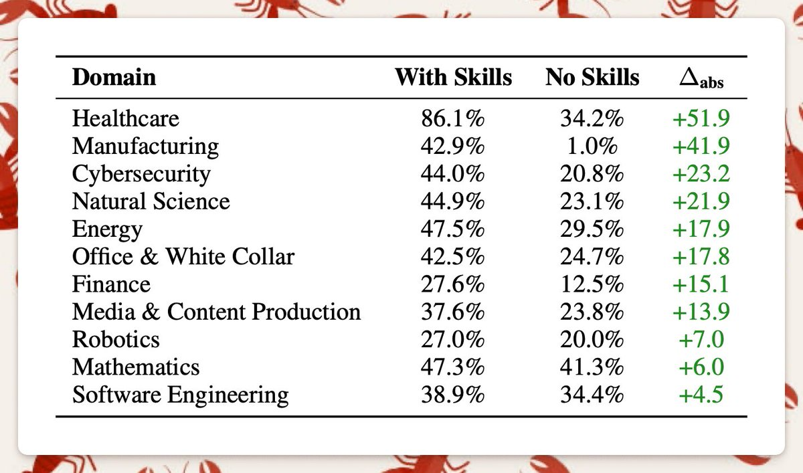
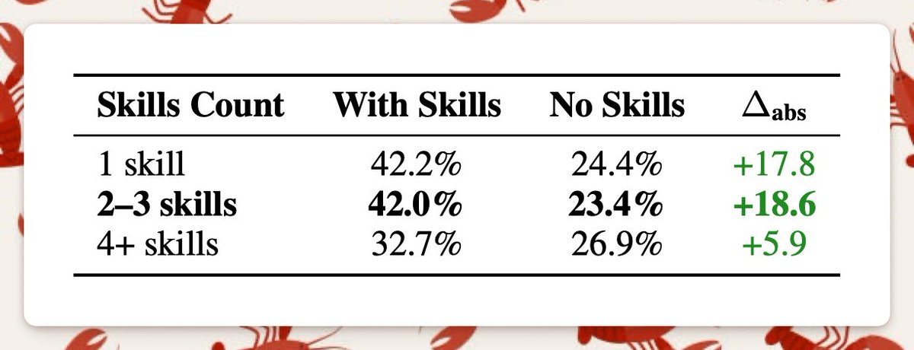

Skills don't work the way we think they do

I just finished reading SkillBench paper: https://arxiv.org/pdf/2602.12670
And the results are definitely not what most people expect.
What researchers did

They did 86 real-work tasks across 11 domains and executed 7,308 runs.
Each task was tested in three modes:
- Baseline (no skills)
- Curated skills (human-written)
- Self-generated skills by the model

Without further ado, below are some conclusions that I found interesting in the paper.
Self-generated skills don't help
One of the most hyped ideas in agent research is:
“Let the model write its own tools / skills.”
But it is mostly a wasted effort. In this research, self-generated skills produced no meaningful improvement over baseline.
In some cases, they made performance worse.
Today's models simply cannot reliably create useful reusable procedural abstractions.
This matters because a huge part of current agent research assumes models can recursively improve by generating better skills/tools. This benchmark suggests that assumption is premature.

Human-made skills work A LOT better
When Skills were carefully written by humans, performance jumped +16.2 percentage points on average.
But here's what's even more surprising:
Domain variance was extreme
- Some domains saw small gains (~4-5 pp)
- Others saw enormous gains (~50+ pp)

Skills don't help the same in different fields.. They disproportionately help in structured, procedural domains.
Smaller models + skills ≈ bigger models without skills
A smaller model with curated Skills matched or exceeded a larger model without Skills.
This is huge for cost optimization:
- Local agents
- Edge deployment
- Open-source models
Too many skills can hurt
Overly broad or verbose skill libraries degraded performance. Focused, minimal skill modules performed better.

Pick your skills carefully. 2-3 skills work better than 4+ skills.
Here is my takeaway
If this paper is right (and i think it is, mostly because of my personal experiences with skill files):
- Scaling alone isn't enough
- Autonomy narratives are premature
- Skill architecture design is now a first-class research problem
Read the full paper: https://arxiv.org/pdf/2602.12670